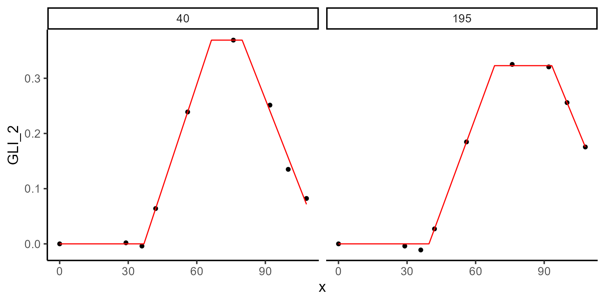
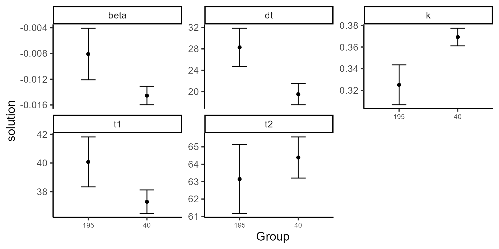

Exploring data explorer()
names(results)
#> [1] "summ_traits" "metadata" "locals_min_max" "dt_long"
#> [5] ".keep"Data exploration
p1 <- plot(results, type = "evolution", return_gg = TRUE)
p2 <- plot(results, type = "time_by_trait", return_gg = TRUE)
ggarrange(p1, p2, nrow = 2)
Target function for maturity
\[\begin{equation} f(t; t_1, t_2, t_3, k, \beta) = \begin{cases} 0 & \text{if } t < t_1 \\ \dfrac{k}{t_2 - t_1} \cdot (t - t_1) & \text{if } t_1 \leq t \leq t_2 \\ k & \text{if } t_2 \leq t \leq t_3 \\ k + \beta \cdot (t - t_3) & \text{if } t > t_3 \end{cases} \end{equation}\]

Fitting models for maturity
mod_1 <- dt_potato |>
modeler(
x = DAP,
y = GLI_2,
grp = Plot,
id = c(195, 40),
parameters = c(t1 = 38.7, t2 = 62, t3 = 90, k = 0.32, beta = -0.01),
fn = "fn_lin_pl_lin",
add_zero = TRUE
)
kable(mod_1$param)| uid | t1 | t2 | t3 | k | beta | sse | auc |
|---|---|---|---|---|---|---|---|
| 40 | 36.88016 | 66.41594 | 79.85413 | 0.3691396 | -0.0105694 | 0.0006928 | 16.61523 |
| 195 | 39.59062 | 68.27877 | 93.33638 | 0.3228831 | -0.0100491 | 0.0001490 | 16.37637 |
Providing initial parameters from the canopy model
fixed_params <- results |>
pluck("dt_long") |>
filter(var %in% "Canopy" & uid %in% c(195, 40)) |>
group_by(uid) |>
summarise(k = max(y), .groups = "drop")
mod_2 <- dt_potato |>
modeler(
x = DAP,
y = Canopy,
grp = Plot,
id = c(195, 40),
parameters = c(t1 = 45, t2 = 80, k = 0.9),
fn = "fn_piwise",
fixed_params = fixed_params,
add_zero = TRUE,
max_as_last = TRUE
)
kable(mod_2$param)| uid | t1 | t2 | sse | k | auc |
|---|---|---|---|---|---|
| 40 | 34.80771 | 60.84828 | 0.0014765 | 100 | 6017.198 |
| 195 | 38.72534 | 61.96802 | 0.0000000 | 100 | 5765.332 |
Passing initial values
initials <- mod_2 |>
pluck("param") |>
select(uid, t1, t2) |>
mutate(t3 = 100, k = 0.32, beta = -0.01)
kable(initials)| uid | t1 | t2 | t3 | k | beta |
|---|---|---|---|---|---|
| 40 | 34.80771 | 60.84828 | 100 | 0.32 | -0.01 |
| 195 | 38.72534 | 61.96802 | 100 | 0.32 | -0.01 |
mod_3 <- dt_potato |>
modeler(
x = DAP,
y = GLI_2,
grp = Plot,
id = c(195, 40),
initial_vals = initials,
fn = "fn_lin_pl_lin",
add_zero = TRUE
)
kable(mod_3$param)| uid | t1 | t2 | t3 | k | beta | sse | auc |
|---|---|---|---|---|---|---|---|
| 40 | 36.88024 | 66.41594 | 79.85395 | 0.3691399 | -0.0105693 | 0.0006928 | 16.61520 |
| 195 | 39.59062 | 68.27877 | 93.33638 | 0.3228831 | -0.0100491 | 0.0001490 | 16.37637 |
Adding constrains to the optimization
mod_4 <- dt_potato |>
modeler(
x = DAP,
y = GLI_2,
grp = Plot,
id = c(195, 40),
parameters = c(t1 = 38.7, t2 = 62, dt = 28, k = 0.32, beta = -0.01),
fn = "fn_lin_pl_lin2",
method = c("nlminb", "L-BFGS-B"),
lower = c(-Inf, -Inf, 0, -Inf, -Inf),
upper = c(Inf, Inf, Inf, Inf, 0),
add_zero = TRUE
)
kable(mod_4$param)| uid | t1 | t2 | dt | k | beta | sse | auc |
|---|---|---|---|---|---|---|---|
| 40 | 36.88016 | 66.41594 | 13.43819 | 0.3691396 | -0.0105694 | 0.0006928 | 16.61523 |
| 195 | 39.59062 | 68.27877 | 25.05761 | 0.3228832 | -0.0100491 | 0.0001490 | 16.37637 |